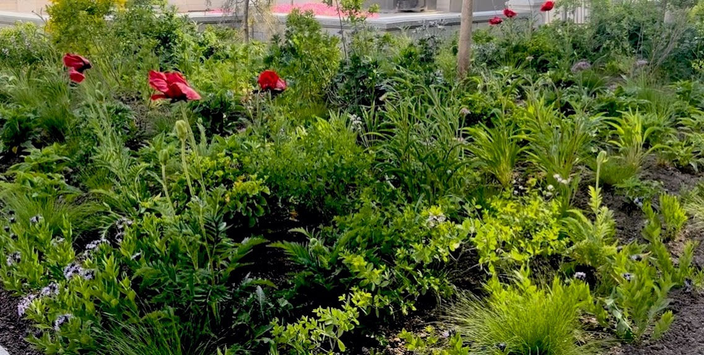
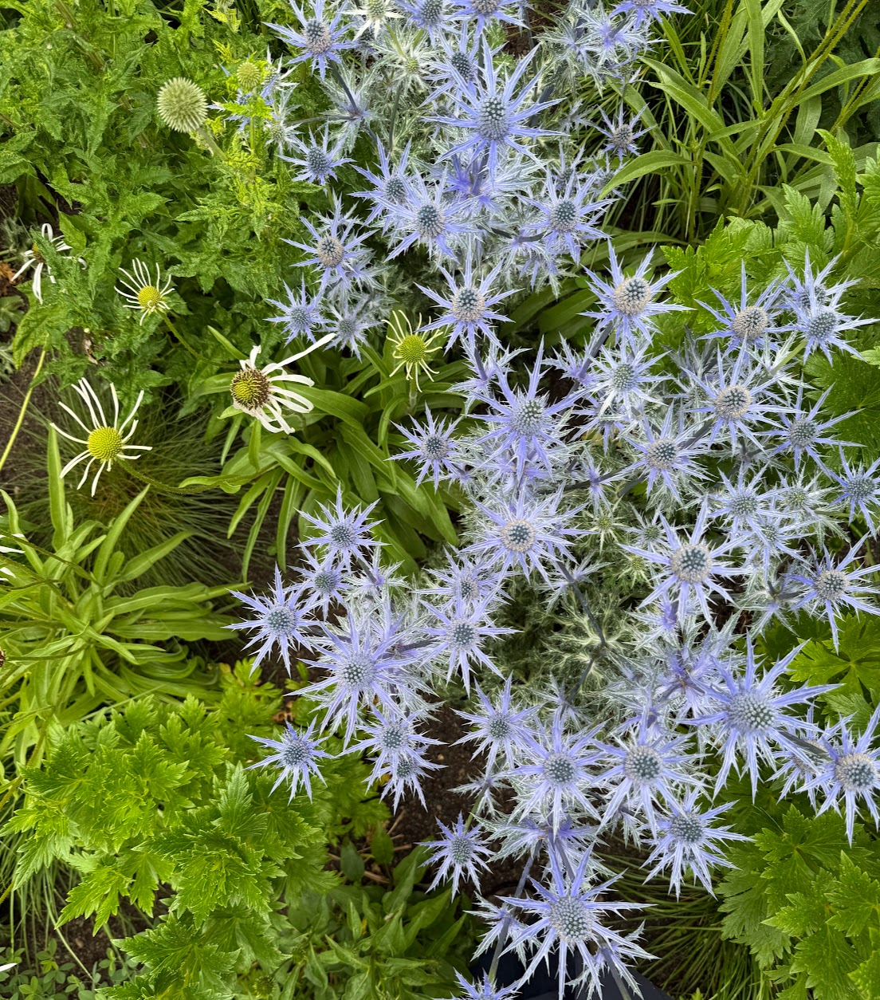
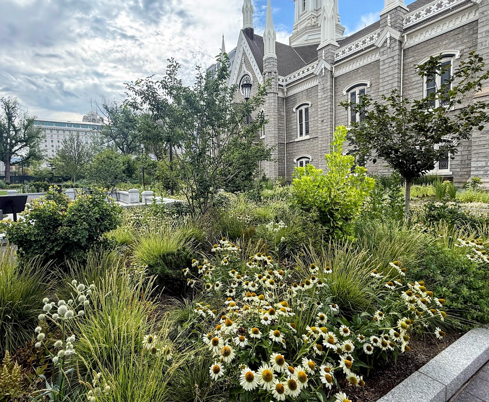
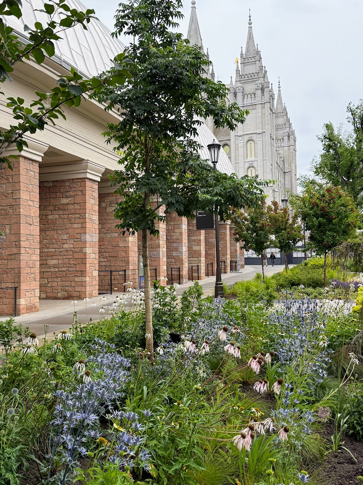
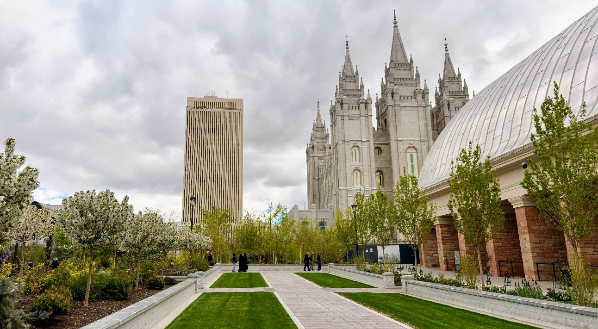
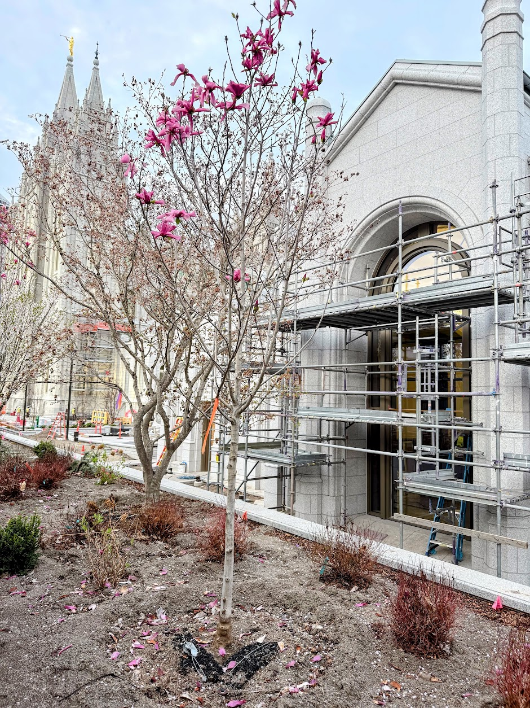
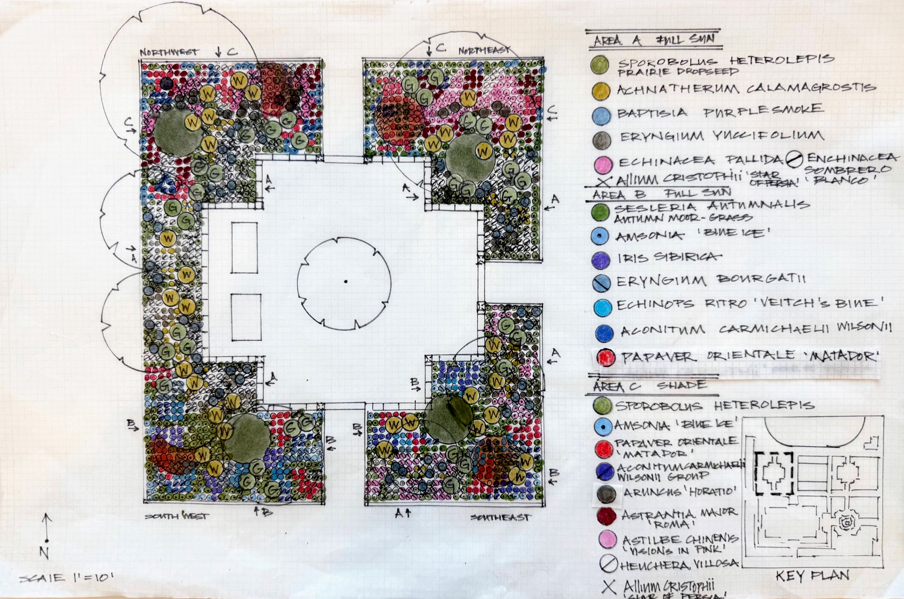
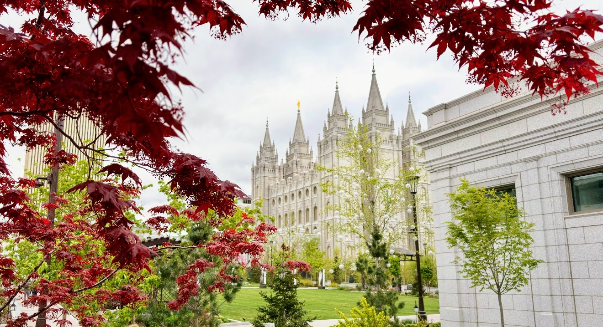
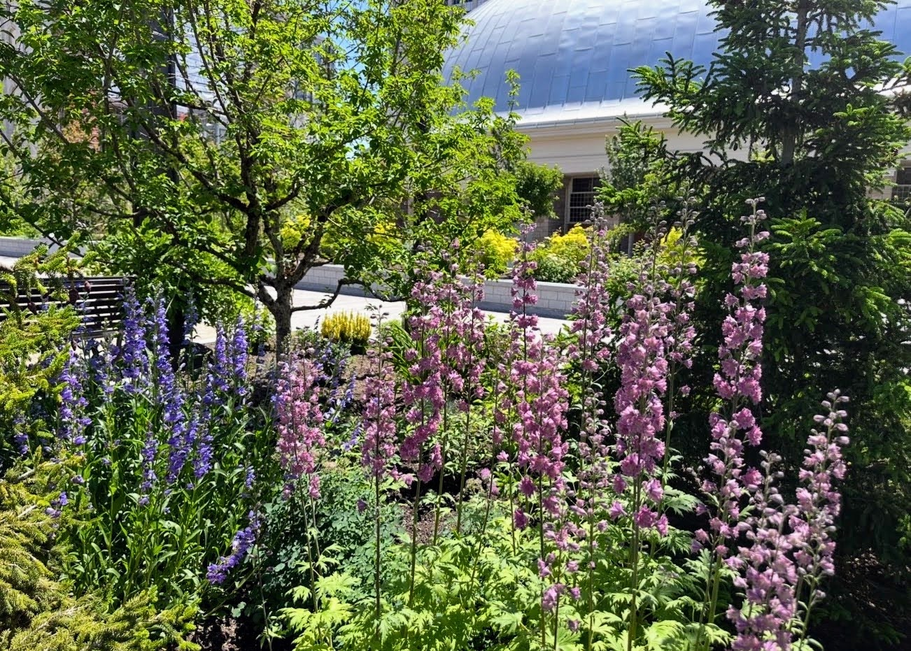
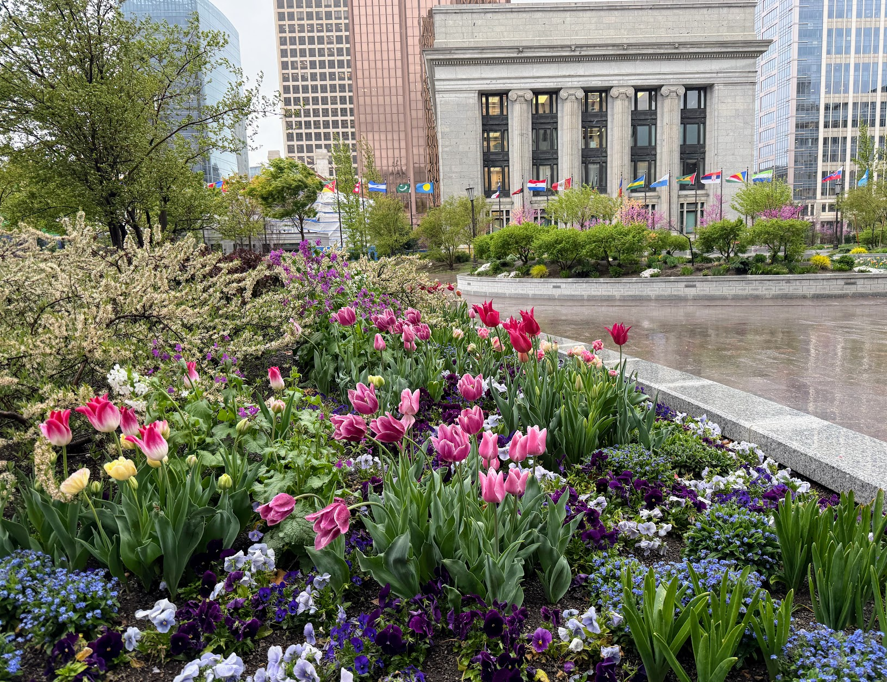

Salt Lake City, Utah
The place
At the heart of downtown Salt Lake City, Temple Square is historic ground on a civic scale — grounds that welcome millions of visitors a year and are tended and replanted through every season. On its east side, a long run of perennial border unfolds toward the Assembly Hall, formal in its bones but given over entirely to flower.
The brief
The brief called for continuous bloom across a public border seen by a scale of visitor few residential gardens ever meet — a planting that could hold its own against the grandeur of the site while still rewarding a slow walk and a close look.
The design
The border is built to carry continuous bloom from the first bulbs of spring through the last asters of fall, so no stretch of the season is left bare. Early poppies give way to the steel-blue globes of globe thistle in high summer, carrying the border's color into the months when the display beds elsewhere on the grounds begin to fade.
It is one part of an ongoing planting relationship with Temple Square — work that continues season over season, not a single planting finished and left.








